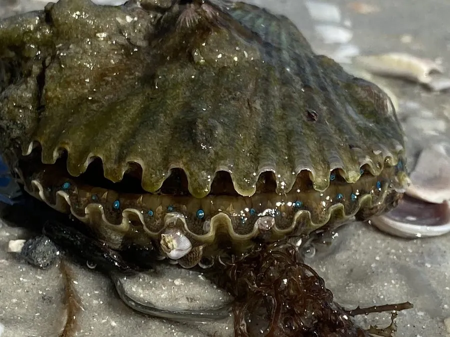

软体动物 · 动物界
海湾扇贝 Argopecten irradians

原产北美东岸的小型扇贝，生长快、养殖周期短，被引入中国后成为北方海水养殖的重要品种，闭壳肌可制干贝。
- 分类
- 门软体动物门纲双壳纲目海扇蛤目科扇贝科属海湾扇贝属
- 栖息环境
- 浅海沙泥底质、海湾和潟湖，靠足丝附着在固体表面
- 地理分布
- 原产北美大西洋沿岸，1982 年引入中国，山东、河北等地广泛养殖
- 保护级别
- 暂无评估；中国未列入国家重点保护野生动物名录（重要养殖贝类）
物种志
海湾扇贝的贝壳呈扇形，两壳近等大，壳面有 18–20 条放射状的肋纹，壳色多为灰白、黄褐或紫褐，壳长一般 5–8 cm。它是扇贝中体型较小的种类，但生长速度很快。
海湾扇贝原产北美大西洋沿岸，从加拿大到美国东岸的海湾和潟湖，栖息于浅海沙泥底质，靠足丝附着在固体表面。它是滤食性动物，吃浮游生物和有机碎屑。海湾扇贝是雌雄同体的贝类，同一个体的生殖腺中同时有卵巢和精巢，繁殖期在春夏季，产卵量大。1982 年它被引入中国，随后在山东、河北等地推广养殖，因生长快、养殖一年左右即可上市，成为中国北方海水养殖的重要品种，其闭壳肌干制后就是“干贝”。目前它没有IUCN 的正式评估，中国未将其列入国家重点保护野生动物名录。
形态与习性
- 食性滤食浮游生物和有机碎屑
- 壳长一般 5–8 cm
- 繁殖雌雄同体，春夏季繁殖，产卵量大
- 引种历史1982 年引入中国，现为北方重要养殖品种
- 养殖周期生长快，养殖一年左右即可上市
- 壳面有 18–20 条放射状肋纹
趣味知识
- 海湾扇贝原产北美，1982 年被引入中国，如今是北方重要养殖品种。
- 它是雌雄同体的贝类，同一个体既能产卵又能排精。
- 海湾扇贝生长很快，养殖一年左右就能上市。